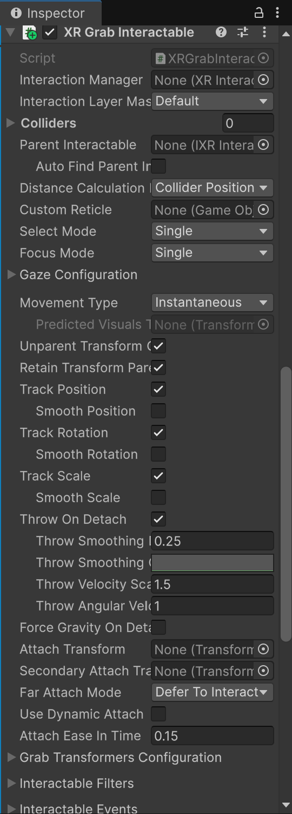
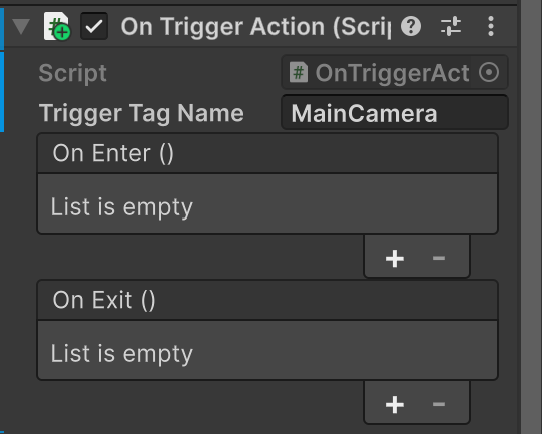
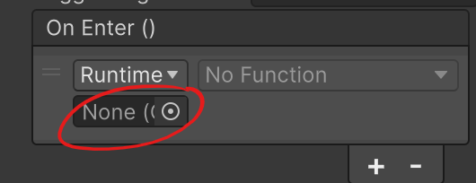
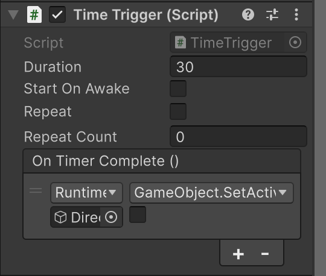
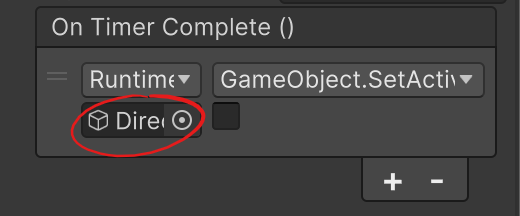
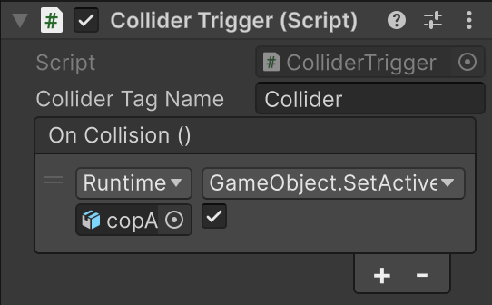
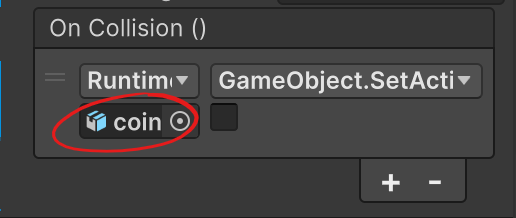
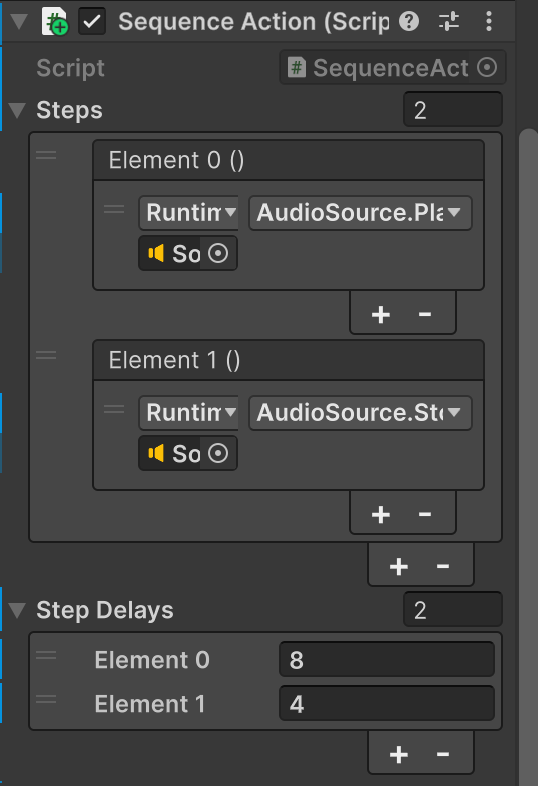
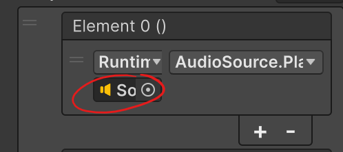

Three key takeaways about designing multi-step, XR-native interactions that remain editable by non-programmers. Think about all four of your components and the grab interactable. What did the built-in grab component do well that you tried to copy? What would you do differently?
1. What I liked about the grab component is I didn't have to think about its mechanics at all. I read that it was a grabbable item and suddenly it was without me having to think too hard about the physics or what conditionals are being met. Naming conventions is something I like to stick to which is how I named my scripts and the objects in the scene, though I think some of the inspector menu descriptions are either too vague or hard to understand what was being said.2. Writing code that works as intended may sound like the bare minimum but I would be disappointed to try and implement a black box component based off its name that just does not work. Making sure your own code works by applying it in a small scenario is a key factor to it being a part of a toolkit. I definitely would not add a screwdriver in my tool belt if it flew off and started breaking windows.
3. Making sure to use comprehensive and easy to follow language so anyone can learn from or use your creation. While it is nice to be able understand certain terminology, it is equally as important to be able to put what you know into words. Not only does it allow for inclusiveness and collaboration, but being able to reteach it in its barest form helps remember it too.
This toolkit is what will let your ENG teammates prototype SoXR interactions independently. What does "technical and non-technical contributors collaborating equitably" actually look like in practice once this toolkit exists? What are its limits (i.e., what can't your teammates do without a programmer)?
Once this toolkit exists, both technical and non-technical contributors will continue to be important to each stage in the process. Technical contributors will have to not only create the tool kit, but be able to maintain and update it with any feedback from those who interact with it. Non-technical people will also not only give feedback and suggest new elements, but learn new ways they can tell a story and expand on creative inputs and outputs. Without a programmer, any issues that may arise with under-the-hood mechanics or concepts would be lost on those who don't normally deal with code. And on the other hand, the biggest limit for programmers is while we built it and know how to use our creation (for the most part), it also means we are somewhat "blind" to use cases we never thought of (or didn't feel like handling), so we need someone who is less technical to actually test it.Challenges: What was the hardest part of this assignment? What did you learn from testing your guide with someone else?
Without saying the hardest part of the project was the entire thing, the most difficult challenges I faced by far was writing the scripts and understanding what colliders/ code needed to be attached to which object. I have yet to test the guide with someone else but I look forward to them being hopefully less confused than I was.
Collider script
Collision Trigger script
Sequence script
Time Trigger script
Documentation Guide
Now lets go further into depth of some of the "tools" created:
Grab Interactable -
How to set it up, with numbered steps and annotated screenshots of the Inspector.
1. Type in XR Grab Interactable after clicking Add Component and select it
2. This menu will appear:

3. And you're done! This is a component already in Unity so if you want to learn more about it follow this link.
OnTriggerAction -
1. Type in OnTriggerAction after clicking Add Component and select it
2. This menu will appear:

3. In the Trigger Tag Name box, enter the tag name of the object that will set off the event4. Under the On Enter () or On Exit () menu click the + sign
5. Drag the object you want the event to effect into this box:

6. The No Function box can now be entered into which is where you will select which event will happen to the object you selected|
Property |
Description |
|---|---|
|
Trigger Tag Name |
The tag assigned to the object which will trigger the event when it comes in contact |
|
On Enter |
What event you want to happen when this object enters the area |
|
On Exit |
What event you want to happen when this object exits the area |
Make sure you add a collision component to the object you want to act as thing that makes the event happen. Also make sure you check the Is Trigger box!
TimedAction -
1. Type in TimedAction after clicking Add Component and select it
2. This menu will appear:

3. Type into the Duration box how many seconds you want to pass before the event happens4. If you want the countdown to begin as soon as the scene loads, check Start On Awake or leave it unchecked so it waits for the specified time
5. Or if you want this timer to reset and repeat its event, check Repeat then specify how many times you want it to repeat in Repeat Count
6. Drag the object you want the event to effect into this box:

7. The No Function box can now be entered into which is where you will select which event will happen to the object you selected|
Property |
Description |
|---|---|
|
Duration |
The seconds to wait before the event happens |
|
Start On Awake |
When the user starts the scene the event will either happen immediately or only after triggered |
|
Repeat |
If you want the timer to restart and repeat the triggered event |
|
Repeat Count |
How many times the user wants the timer to reset and repeat its event |
|
On Timer Complete |
What event you want to happen when the timer meets the specified duration |
When dropping objects into the box, know that the event that will occur is what that object itself is capable of. So for example, if an object had the ability to light up from another script attached to it, after the timer hits its duration, the function field will be what makes the event of turning it on happen.
CollideAction -
1. Type in CollideAction after clicking Add Component and select it
2. This menu will appear:

3. In the Collider Tag Name box, enter the tag name of the object that will set off the event4. Under the On Collision () menu click the + sign
5. Drag the object you want the event to effect into this box:

6. The No Function box can now be entered into which is where you will select which event will happen to the object you selected|
Property |
Description |
|---|---|
|
Collider Tag Name |
The tag assigned to the object which will trigger the event when it comes in contact |
|
On Collision |
What event you want to happen when this object collides with another |
A collider needs to be able to hit something rather than just trigger it. This means one of the objects will need a rigid body and neither object that causes the event can have the Is Trigger box checked; this will cause things to fall through.
SequenceAction -
1. Type in SequenceAction after clicking Add Component and select it
2. This menu will appear:

3. In the Steps menu click the + sign4. Drag the object you want the event to effect into this box:

5. And if you want an event after that one to happen, click the + again6. The No Function box can now be entered into which is where you will select which event will happen to the object you selected
7. In Step Delays click + and enter the seconds you want to delay each ordered event in Steps
|
Property |
Description |
|---|---|
|
Steps |
The ordered events you want to occur one after another |
|
Step Delays |
The seconds to wait before each event happens |
When adding multiple events, take into account the amount of time the previous event takes and if it is still occurring.
Putting it together
For my scene I utilized each component to build my story. The coin and soda can are grabbable objects using the XR Grab Interactable script. But first, to get the soda, I use the Collider script on the vending machine to simulate feeding a coin into the slot. Once they "collide", a soda appears and the coin disappears. At the same time, the Time script is moving the sun in the scene after 30 seconds to appear darker out. Now with my soda appearing, another timer starts from the Sequence script. As I chug the soda, audio plays after 8 seconds, then the next event is the audio being stopped after 4 seconds. And finally, because littering is bad, when I throw the soda can onto the ground being the enter condition, the Trigger script appears a cop car which turns on its sirens and starts driving toward me.


Credits and links to all assets within Unity project and assets within HTML used:
poly models -
Soda Can by jeremy [CC-BY] (https://creativecommons.org/licenses/by/3.0/) via Poly Pizza
(https://poly.pizza/m/cNjAaDY27fQ)
Vending Macine by DavesParable [CC-BY] (https://creativecommons.org/licenses/by/3.0/) via Poly Pizza
(https://poly.pizza/m/KJxNU39kOa)
Gold Coin by Zsky [CC-BY] (https://creativecommons.org/licenses/by/3.0/) via Poly Pizza
(https://poly.pizza/m/XbGSovhszf)
Crushed Soda Can by Thermo_DynAmics [CC-BY] (https://creativecommons.org/licenses/by/3.0/) via Poly
Pizza (https://poly.pizza/m/F9RZE7EnWl)
Trash can by Poly by Google [CC-BY] (https://creativecommons.org/licenses/by/3.0/) via Poly Pizza
(https://poly.pizza/m/0yT-YR5yO4L)
Police Car by Kay Lousberg (https://poly.pizza/m/Uj7i2vlmir)
audio -
Sound Effect by freesound_community
from Pixabay
Sound Effect by MrVailen
from Pixabay
Sound Effect by freesound_community
from Pixabay
Sound Effect by freesound_community
from Pixabay
table code: https://www.material-tailwind.com/docs/html/table